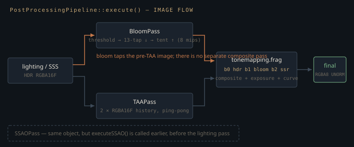

Monograph · Tree · ← Module hub · Post stack
deferred
Post stack
Bloom, TAA, tonemap orchestration.
Four passes, one of which is not post
`PostProcessingPipeline` owns bloom, TAA, SSAO and tonemapping, but only three of them run inside `execute()`. SSAO has a separate entry point, scheduled by `DeferredRenderer` as a compute pass ahead of lighting. The comment there states the intent — occlusion should modulate the ambient term while lighting is still being computed, rather than being multiplied into a finished image where it would darken direct light and emissives too.
// SSAO runs before lighting so its output can modulate ambient occlusionohao/render/deferred/post_processing_pipeline.cpp:66The ordering is real and the C++ plumbing is complete: the SSAO view reaches `DeferredLightingPass`, is written into set 0 binding 10, and raises flag bit 1.
if (m_ssaoView != VK_NULL_HANDLE) m_params.flags |= 2; // SSAOohao/render/deferred/deferred_lighting_pass.cpp:169`deferred_lighting.frag` declares no binding 10 — its samplers jump from `brdfLUT` at 9 to `ssgiTexture` at 11 — and never masks the flag word against bit 1; only 1, 4, 8, 16 and 32 are tested. The `ao` that multiplies the ambient term is the alpha channel of the albedo G-buffer:
float ao = gBuffer2Sample.a;shaders/core/deferred_lighting.frag:169which the G-buffer pass filled at rasterisation time from the R channel of the material's packed occlusion/roughness/metallic texture:
ao *= rm.r; // R channel = AOshaders/core/gbuffer.frag:104The screen-space term is dispatched and bound every frame and nothing samples it: the only occlusion in the deferred image is the artist-authored kind baked into the material. Closing the gap is a binding declaration and one `& 2u` — but as shipped, `setSSAOEnabled(true)` buys a compute dispatch and no pixels.
The three passes that do run inside `execute()` form a chain with one asymmetry worth spotting up front: TAA rebinds the working image for whatever comes next, bloom does not.
if (taaOutput != VK_NULL_HANDLE) currentInput = taaOutput;ohao/render/deferred/post_processing_pipeline.cpp:92Bloom is fired at the raw HDR input and its result is left in a texture; the composite happens later, inside the tonemap fragment shader, as a second sampler. Bloom therefore always sees the pre-TAA frame, and no composite pass exists.

The bloom chain and its one anti-firefly trick
The mip chain is a single `R16G16B16A16_SFLOAT` image with per-level views, mip 0 at full resolution, capped at eight levels:
m_mipLevels = static_cast<uint32_t>(std::floor(std::log2(std::max(m_width, m_height)))) + 1;ohao/render/deferred/bloom_pass.cpp:120At 1920×1080 the log2 term wants eleven levels and `MAX_MIP_LEVELS` clamps it to eight, so the smallest mip is 15×8, not 1×1 — the widest bloom skirt is bounded by that clamp rather than by the resolution.
Extraction is a soft-knee threshold on Rec. 709 luminance. With $L$ the luminance, $T$ the threshold and $k$ the soft-threshold width:
$c$ is the fraction of the pixel's colour kept; both $10^{-4}$ are the same literal, guarding each denominator against zero. The square on $s$ makes the knee $C^1$ at $L=T-k$, so a light brightening past the threshold ramps into bloom instead of popping.
Where the branches meet is not where a soft knee normally puts it. At $L=T+k$ the numerator is $2k$, so the clamped ratio is 1 and $s=1$, while the linear branch is only $k$ — for the two to meet there the square has to be multiplied back by $k$. The shader divides, squares, and never multiplies back:
soft = clamp(soft / (2.0 * params.softThreshold + 0.0001), 0.0, 1.0);shaders/postprocess/bloom_threshold.frag:25$s$ pins at 1 from $L=T+k$ upward, so the `max` stays on the soft branch until $L-T>1$ — and since nothing the build compiles moves either knob, the shipped $T=1$, $k=0.5$ put the handover at $L=2$, not $L=1.5$.
float contribution = max(soft, luminance - params.threshold);shaders/postprocess/bloom_threshold.frag:29float m_softThreshold{0.5f};ohao/render/deferred/bloom_pass.hpp:83Two consequences of the missing factor. Across the knee the extraction is $1/k$ times what the $k$-scaled curve gives — double, here. And between $T+k$ and $T+1$, $c=1/L$ exactly, so every pixel in that band is renormalised to unit luminance instead of being scaled by its excess over the threshold.
Downsampling is the 13-tap Jimenez/CoD filter, and the first step of the chain — and only the first — takes the *partial* Karis average. The thirteen taps are first collapsed into the filter's five 4-tap box groups; the weight $1/(\max(r,g,b)+1)$ is then evaluated once per group, never per tap:
return 1.0 / (max(max(c.r, c.g), c.b) + 1.0);shaders/postprocess/bloom_downsample.frag:21Each group's fixed share (0.125 for the four corner quads, 0.5 for the centre quad) is scaled by its Karis weight, and the sum is divided by the total weight — without that renormalisation the whole mip would darken in proportion to how bright it is:
(kw1 + kw2 + kw3 + kw4 + kw5);shaders/postprocess/bloom_downsample.frag:84(i == 1) ? 1.0f : 0.0f // First downsample uses Karis average (anti-firefly)ohao/render/deferred/bloom_pass.cpp:630That flag is the whole firefly defence. One over-bright pixel surviving into mip 1 unweighted becomes a pulsing blob once it is spread over the upper mips; the group weight is a tone-mapped average that caps the influence of whichever quad contains it. Applying it on every level would keep suppressing energy that has already been averaged down, so the flag is deliberately false from mip 2 up.
The upsample walks back down the chain with a 9-tap tent, and it does not read and re-write: the destination is a colour attachment with additive `ONE/ONE` blending and `LOAD_OP_LOAD`, so each level accumulates in place.
colorAttachment.loadOp = VK_ATTACHMENT_LOAD_OP_LOAD;ohao/render/deferred/bloom_pass.cpp:272Two consequences. Mip 0 ends up holding the *thresholded* full-resolution image plus the blurred chain, and the tonemap adds that on top of the untouched HDR at unit strength — above-threshold energy is counted roughly twice, not redistributed. And `setBloomIntensity()` is inert: it reaches `BloomPass::m_intensity`, which is pushed to the threshold shader in a field that shader declares and never reads, while the strength the tonemap uses is a literal.
bloomStrength = 1.0f;ohao/render/deferred/post_processing_pipeline.cpp:84The ping-pong that does not pong
`TAAPass` keeps two `R16G16B16A16_SFLOAT` history images. `execute()` computes `outputIndex = m_currentHistoryIndex` and `historyIndex = 1 - m_currentHistoryIndex`, renders into the framebuffer at `outputIndex`:
renderPassInfo.framebuffer = m_framebuffers[outputIndex];ohao/render/deferred/taa_pass.cpp:79and binds the descriptor set at `historyIndex`:
0, 1, &m_descriptorSets[historyIndex], 0, nullptr);ohao/render/deferred/taa_pass.cpp:93The trap is that the swap is already folded into the descriptor sets — set *i* was built to sample history view *1 − i*:
uint32_t historyIdx = 1 - i;ohao/render/deferred/taa_pass.cpp:173The two inversions cancel. Set `1 − cur` samples view `cur`, exactly the view attached to framebuffer `cur`, so the pass samples the image it renders into. That alone would be undefined behaviour; the render pass makes it a certainty by declaring `LOAD_OP_CLEAR` on that attachment, so whatever history was there is gone before the first fragment runs:
colorAttachment.loadOp = VK_ATTACHMENT_LOAD_OP_CLEAR;ohao/render/deferred/taa_pass.cpp:330Binding `m_descriptorSets[outputIndex]` is the one-token fix. A second off-by-one rides on top: `execute()` calls `swapHistoryBuffers()` before returning while `getOutputView()` reads the *current* index, so the pipeline picks up the image written last frame.
[[nodiscard]] VkImageView getOutputView() const { return m_historyViews[m_currentHistoryIndex]; }ohao/render/deferred/taa_pass.hpp:31Every feature toggle defaults to off except tonemapping, and the header says why in a comment — "disabled by default for stability". `model_viewer`'s deferred branch is the only place in the build that switches bloom, TAA and SSAO on. Two other call sites exist and neither is compiled: `renderer_pipeline_tests.cpp` is named by no `CMakeLists.txt` in the tree, and the pybind11 module sits behind an option that defaults off.
option(BUILD_PYTHON_BINDINGS "Build Python bindings for physics testing" OFF)CMakeLists.txt:108That default is load-bearing: it keeps shipped renders away from the aliasing above rather than presenting the pass as production-ready. The alternative — TAA on, trusting the driver to do something sane when a colour attachment is simultaneously a sampled image — fails differently on different hardware, the worst kind of failure to debug.
What the resolve shader does when the plumbing is right
None of the above touches the shader, which is a competent modern resolve. History is fetched with a 4-tap Catmull-Rom approximation rather than plain bilinear — bilinear reprojection re-blurs the history every frame and the softness compounds — with the result floored at zero to kill the ringing Catmull-Rom's negative lobe produces around bright edges.
Rejection is variance clipping in YCoCg. The moments are taken over the nine samples $c_i$ of the 3×3 window centred on the current pixel — the pixel being filtered is inside its own box — converted so luma and chroma get independent bounds:
vec3 sigma = sqrt(max(m2 - m1 * m1, vec3(0.0)));shaders/postprocess/taa_resolve.frag:132$\gamma$ is 1.0, hard-coded — one standard deviation, a tight box favouring responsiveness over stability. History outside it is *clipped* along the ray from the box centre rather than clamped per channel, which moves the sample without shifting its hue; off-screen reprojection falls back to the current frame outright.
The blend then leans on motion: `blend = mix(blendFactor, 0.5, clamp(|v| · motionScale, 0, 1))` with `blendFactor` 0.9 and `motionScale` 100, so a hundredth of a UV of per-frame motion saturates the weight and halves the history's influence.
float blend = mix(params.blendFactor, 0.5, motionWeight);shaders/postprocess/taa_resolve.frag:148One knob is decorative. `TAAParams::flags` documents bit 0 as motion vectors and bit 1 as variance clipping. Bit 1 is raised whenever `m_useVarianceClipping` is set, which it is by default; bit 0 only when a velocity view has actually been bound:
if (m_velocityView != VK_NULL_HANDLE) params.flags |= 1;ohao/render/deferred/taa_pass.cpp:100The shader tests bit 0 and nothing else — clipping is unconditional, and `setUseVarianceClipping(false)` changes nothing.
if ((params.flags & 1u) != 0u) {shaders/postprocess/taa_resolve.frag:95Jitter is a 16-frame Halton (2, 3) sequence centred on zero and divided by the render resolution. `TAAPass` generates it, but the resolve shader is never told what it is: `TAAParams` carries only texel size, blend factor, motion scale and flags. Its only live consumer is `DeferredRenderer`, which adds it straight into the projection's third column:
jitteredProj[2][0] += jitter.x;ohao/render/deferred/deferred_renderer.cpp:292Adding $j$ there shifts NDC x by $-j$ at every depth, and NDC spans the framebuffer over two units, so the realised sweep is $\pm\tfrac14$ pixel — half the $\pm\tfrac12$ that covers a full pixel footprint. The sequence is well stratified; it just never reaches the pixel edges.
The two matrices that do have to agree do not. The G-buffer rasterises the current frame through `jitteredProj`, but the matrix saved for next frame's motion vectors is the unjittered one:
m_prevViewProj = m_proj * m_view;ohao/render/deferred/deferred_renderer.cpp:654so the velocity a fragment writes is the true screen motion plus that frame's own jitter:
outVelocity = (currentNDC - prevNDC) * 0.5;shaders/core/gbuffer.frag:136The two positions being differenced are not in the same space, and nothing downstream compensates. A perfectly static camera therefore reports up to a quarter pixel of motion, redirected every frame by the Halton sequence. That is far below the UV magnitude `motionScale` needs to move the blend, so the weight barely notices; the damage is that `historyUV = uv - velocity` reprojects into the wrong texel every frame — the resampling error the Catmull-Rom fetch above exists to keep small.
Five curves, and one that must not be gamma-corrected
The shader composites (HDR + bloom·strength + SSR + flash), multiplies by exposure, and switches on an operator index: the Narkowicz ACES fit, extended Reinhard with a hard-coded white point of 4.0, Uncharted 2 with Hable's constants, a Neutral compressor that desaturates only above 0.76, and a Hejl filmic curve. The last emits gamma-space values directly, so the shader skips the final `pow`:
if (params.tonemapOperator != 4u) {shaders/postprocess/tonemapping.frag:129That exception is coupled to the target format:
imageInfo.format = VK_FORMAT_R8G8B8A8_UNORM; // LDR output — shader does manual gamma, no HW sRGBohao/render/deferred/post_processing_pipeline.cpp:320The final image is `_UNORM`, not `_SRGB`, because gamma is applied by hand. Switching it to an sRGB format so the hardware applies the transfer function double-encodes all five operators — and the branch above means the Filmic path would break in a subtly different way from the other four.
The SSR tap is the sharpest edge here. It is added unconditionally, with no strength multiplier:
hdrColor += ssr.rgb;shaders/postprocess/tonemapping.frag:95while binding 2 falls back to the HDR input itself when no SSR view has been set:
imageInfos[2].imageView = m_ssrView != VK_NULL_HANDLE ? m_ssrView : m_hdrInputView;ohao/render/deferred/post_processing_pipeline.cpp:303Bloom's binding has the same fallback and survives it because `bloomStrength` is zero when bloom is off. SSR has no such guard, so a live fallback adds the scene to itself — one stop brighter, everywhere. In practice `DeferredRenderer` calls `setSSRView()` before `setHDRInputWithImage()` every frame and the real view wins; the fallback goes live only if `SSRPass` failed to initialise.
The `flashIntensity` push constant — an additive warm-white HDR spike for lightning, placed before the tonemap so the curve compresses it — is wired end to end and has no producer anywhere in the tree.
Contracts
- `setSSRView()` only stores a handle; the descriptor is rewritten only by `setHDRInput`/`setHDRInputWithImage`. SSR must be set *before* the HDR input each frame, or binding 2 keeps last frame's view — and if never set at all, the tonemap adds the scene to itself.
- `setTonemappingEnabled(false)` does not yield an untonemapped LDR image. Bloom and TAA still run, but `m_didExecute` stays false and `DeferredRenderer::getFinalOutput()` falls back to the HDR lighting attachment, discarding both.
- The output image is `R8G8B8A8_UNORM` on purpose. Moving to `_SRGB` must be paired with removing the `pow` in `tonemapping.frag`, and reconciled with the operator-4 branch that already skips it.
- `setBloomIntensity()` and `setUseVarianceClipping()` are stored but never reach the image: bloom strength is a literal in `execute()`, and clipping is unconditional in the shader.
- `setSSAOEnabled(true)` produces an image nothing reads. Anyone adding `binding = 10` to `deferred_lighting.frag` must also gate it on flag bit 1 — the C++ side already raises that bit, and the ambient term already multiplies by a *different* `ao` from the G-buffer alpha, so a naive addition applies occlusion twice.
- TAA is not correct as written — render target and sampled history alias, `getOutputView()` returns the previous frame's buffer, and motion vectors carry the current frame's jitter because `m_prevViewProj` is stored unjittered. It is off by default; treat deferred output with TAA enabled as untrusted.
Source files
ohao/render/deferred/post_processing_pipeline.cppohao/render/deferred/deferred_lighting_pass.cppshaders/core/deferred_lighting.fragshaders/core/gbuffer.fragohao/render/deferred/bloom_pass.cppshaders/postprocess/bloom_threshold.fragohao/render/deferred/bloom_pass.hppshaders/postprocess/bloom_downsample.fragohao/render/deferred/taa_pass.cppohao/render/deferred/taa_pass.hppCMakeLists.txtshaders/postprocess/taa_resolve.fragohao/render/deferred/deferred_renderer.cppshaders/postprocess/tonemapping.fragohao/render/deferred/post_processing_pipeline.hppParent hub for the full pipeline narrative; this page is the file-level design unit. Sitemap · hover glossary terms anywhere.